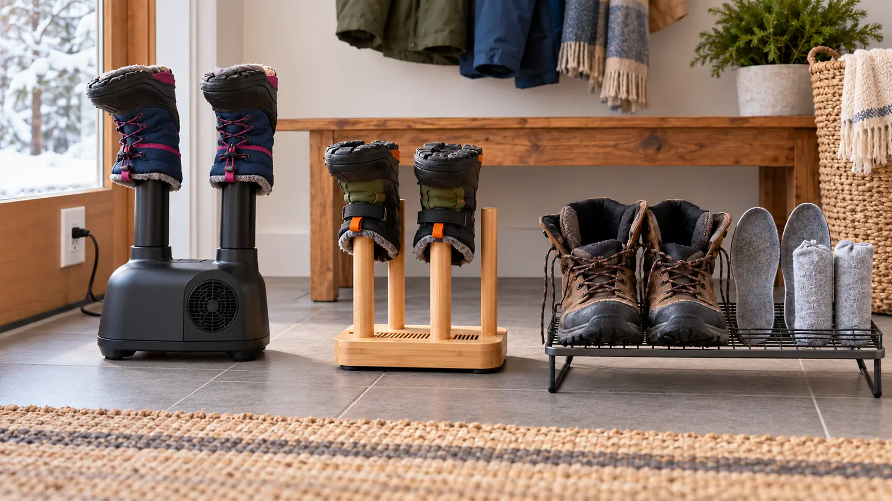

No-heat forced air
Fits: mixed materials when the footwear maker permits moving room-temperature air. Wins: speed without added heat. Loses: fan noise, electricity and moving parts.
GEAR · WET BOOTS · HONEST BUYING FRAMEWORK
A dryer cannot rescue the wrong process. Open the boots, remove what the maker permits, read the footwear care label, then buy electricity only if passive airflow repeatedly misses tomorrow’s deadline.

For three wet-gear days, open laces and tongues, remove insoles or liners only when their maker permits it, blot surface water, and place everything on a ventilated rack in a dry indoor location away from direct heat. Record three facts: how many pairs arrived wet, when they were needed again and what was still damp at departure.
If passive airflow finishes before morning, buy nothing. If one removable liner is the bottleneck, solve that part. If four pairs arrive at 6 p.m. and must be wearable at 7 a.m., a powered system may earn its footprint. The decision is load and deadline, not an odor claim.
Manufacturer examples show why category promises are not enough. PEET’s current instructions distinguish natural-convection models from a fan model with heat/no-heat selection and a three-hour timer, and specify vents, attachments and clearance. DryGuy lists a forced-air category and a 105°F heated model. Those facts describe those products, not every dryer and not every boot.
Measure from a dry, usable wall outlet before choosing the device. The CPSC warns that damaged, overloaded or poorly constructed extension cords can create shock or fire hazards. The safest editorial rule here is simple: do not build the plan around an extension cord unless the appliance’s own instructions explicitly permit it and the cord/outlet setup meets every current requirement. Never route a cord through standing water, under a rug, across a doorway or where children pull boots past it.
Inspect the appliance, plug and cord before use. A loose outlet, warm plug, damaged insulation, unusual odor, crackling, repeated breaker trip or any shock is a stop condition. Unplug if safe to do so and follow the maker’s service route; do not tape a cord or open a housing. A qualified electrician is appropriate for a suspect outlet or recurring electrical issue.
Pair this system with the kids’ rain-boot fit and drying guide, the trail footwear decision and the snow-pants bathroom and drying framework.
Low energy: open the boots, remove permitted insoles and use the rack. Power outage: unplug the device and switch to passive airflow; never power it from an improvised source. One pair still damp: use a different dry pair if fit and weather work—do not increase heat beyond instructions. Travel: choose passive separation and more time unless a portable unit is expressly compatible with the available power and footwear.
Skip a powered dryer when passive airflow meets the deadline, outlet placement is unsafe, the footwear maker prohibits the method, the user cannot inspect and operate it reliably, or the family needs a boot repair or replacement rather than faster drying. Renters with questionable outlets should report the issue to the property owner and use a qualified electrician—not the dryer—as the diagnosis.
MAKE THE WEEK COUNT
Build the plan your family can finish well, then leave enough energy for the next part of the day.
More family plansTHE USEFUL STUFF
These are practical categories to compare—not a reason to overpack. Check fit, specifications and current reviews before buying.
Paid links: As an Amazon Associate I earn from qualifying purchases. You pay no additional cost.
Compare port fit, airflow, fan noise, cord length, manual access and the footwear maker's permitted drying method.
See current options → COMPARE ON AMAZONUse heat only when both manuals permit it; verify temperature, timer, clearance, attachments and current safety information.
See current options → COMPARE ON AMAZONA cord-free option when overnight time is available; compare ventilation, insert reset care, capacity and actual storage space.
See current options →